Complete your final project tracking your progress.
Learning outcomes:
Implement project plan
Apply time management techniques
Summarize and communicate the essence of your project development
Have you answered these questions?
What tasks have been completed, and what tasks remain?
What has worked? What hasn't?
What questions need to be resolved?
What will happen when?
What have you learned?
Project Development
I am completing this task with a finished final project already presented. For this reason, it appears to me meaningless to create an imaginary plan to complete something already done. Therefore, I decided to show the competencies required in this assignment in the completion of my Fab Academy as a whole.
Planning
What tasks have been completed, and what tasks remain?
All tasks for completing my final project are done, and I already presented it to Neil. Now, only the documentation and assignments remain, which I show in the spreadsheet below. Original Excel sheet here.
What will happen when?
In order to complete the tasks above, I proposed the timeline below. Original Excel sheet here.
What has worked?
I can connect using my phone to the web interface of the irrigation controller.
I can view the scheduled times and irrigation zones from the web interface.
I can change time and duration from the web interface.
It displays humidity and temperature.
It irrigates the plants according to the schedule.
The LED adds another level of interface to review what is on even without a phone.
The operation and setup are easy enough that anyone without previous knowledge can operate it.
I believe my final project would improve the life of a small farmer/plant enthusiast, reducing, with a relatively low cost, the time needed to spend watering plants. At least it improved my family's life.
What hasn't?
The installation is not so easy; it needs some knowledge and is better performed by an electrician as there is mains power manipulation.
What questions need to be resolved?
I need to improve over the implementation aspects. I believe if I integrate a 230 power outlet for the pump, it would be a simpler installation experience for the user.
What have you learned?
I improved C++ skills while making this project.
I improved electronics design skills while making this project.
Below I documented my learning process from installing a Platformio IDE on VScode to improving my programming skills with C++.
Diary Dates on the test environment before the final PCB
Final Project Progress Diary from 6th of June to 16th of June
6th of June, 2020
As I am writing this there are no current design files, there is a sketch of a code and there is a prototype on a breadboard!
There are in the other hand requirements for the hardware and for the software:
Software Requirements and stage
Simplify the code creating more functions;
try to separate the HTML part for a cleaner code;
Improve the appearance/Interface of the code;
Add readings to HTML;
Add a log of occurrences like over current;
Add more safety for the equipment;
Add a phone interface (APP);
Add function to set current time;
Add renaming function to each relay so one can relate the relay to the area of interest or at least rename relays to actual areas of the farm.
Design Requirements and situation
Need to be water resistant at least;
7th of June, 2020
As of today 07th of June 2020 the development is like this.
The code running on this setup can be found on the Fabfarm Github Autovalve
Shakeel one of our volunteers managed to create a version that runs on a ESP8266 that can be found in the same repo here. Due to the Pandemic situation he left us in a hurry and did not have time to test his code so it worked but not stable due to the fact that he heroically attempted to share the analog pin with the wifi, leading to drops in the wifi that rendered using the system almost impossible. This is the code that I started with.
8th of June, 2020
After many hours trying to understand the code I managed to port Shakeel's code to a ESP32 and also split the file with each function on a separate file.
In this video I show the progress I did so far in the merging the codes and having it work in the ESP32
To port the code to ESP32 might be simple for a programmer but it took many hours for me.
Steps:
separated everything that was a function already to its own file to make it more readable;
Opened then another session of the Arduino IDE and started copying every part of the code line by line to the new session, in this session I renamed the main file to "esp32irrigation"
remapped the pins to ESP32 pins
run beautify on the HTML on Brackets
organized the code so pins are on top
created variables for the RTC pins
Commented parts of the code that print error to the serial monitor
The code is to big for displaying on the HTML so I will leave a link for the state of the code as this early morning: codehere.
Here in this video you can see the testing setup of the current irrigation system of the farm
9th of June, 2020
Today after testing the relays I realized that some relays work some not. After testing on the lab power supply directly with 5volts applied to the signal pin I believe that this is due to low voltage being supplied by the esp32 or the signal voltage.
I will make sure the relays have at least a 5 volts power supply. Wich are their required voltage acording to the datasheet. The signal should be fine at 3.3. Will be tested in situ.
The other point is the current reading that is completely wrong. In other to have the irrigation system working I will have to run it without current sensing until debugged.
10th of June, 2020
After the tests, the conclusion to the voltage problem is that the esp32 should not supply power to the relay, that should be supplied from an external power source, set at 5volts. The signal can come from the esp32 unchanged but the esp 32 should share the same ground.
more changes in the code:
increased the interval the time is displayed from 3000 to 5000 ms (5s) in the variable RTCtimeInterval
increased the interval the setup is displayed from 10000 to 30000 ms (30s) in the variable configTimeInterval
Set recognizable names to the relay's html interface
Cleaned up a bit more on the serial monitor by removing seconds from the setting display
I will place the setup back to work today in the morning and set times for each irrigation and field test the esp32 irrigation module.
Strangely the external RTC clock is not keeping accurate time. I will look into utilizing internal clock with external battery in case of power failure.
Another solution would be to have the esp always connected to the Internet and grabbing the time from the Internet updates to compensate for inaccuracy.
After wakeup update
Today I went into installing the temporary testing setup. I troubleshoot a few problems.
Setup was not working when disconnected from computer: -solution power wiring was not correct, ended up connecting 2 USB cables one for the ESP32 and another for the relays, they both share the same ground, also I might have solved the RTC clock problem as well with the same approach.
This is how the prototype looks now:
After the tests I went back to the code for more customization.
I first watched a series of videos on Youtube about functions really create and then started creating even more functions.
Basically I went into looking how to reduce code repetitions and how to send a value to a function
From the code available I created this function:
void turnOffRelay(int valveHere){
// wait then turn valve relay OFF
Serial.print("Waiting ");
Serial.print(waitTimeValveOff / 1000);
Serial.println("s before deactivating Valve Relay 3.");
delay(waitTimeValveOff);
digitalWrite(valveHere, LOW);
valveHere = 0;
Serial.print("*** Valve Relay ");
Serial.print(valveHere);
Serial.println("3 turned OFF ***");
}
Every time I want to call this function I use
{
int valveHere = valveRelay3;
turnOffRelay (valveHere);
}
The reason I use the {} is because I had to declare the local variable valveHere this way I could replace only that piece of code each time I called the function.
Technically calling that function would be just having this code here turnOffRelay (valveHere); but that would not work alone as I am always replacing the valve relay pin with int valveHere = valveRelay3;
I still haven't tested the behaviour but at least it compiles :-)
I burned it on the ESP32 and the behavior is unexpected. The function keeps printing again and again I believe I need to send back the sate of one variable and I did not do that. I will try using the code return variable; to do it and then test but before I will watch again the functions video to better understand it.
13th of June, 2020
Argh... OK Long time no updates, well the last code uploaded works and I have some functions but not happy yet as Its working on Arduino but not Platformio. What I learned so far is that Arduino IDE does a lot "under the hood" and with platformio you need to setup it in more detail.
I ended up being able to write a file to the spiffs using platformio. I already were able to do it with arduino but without really understanding how now maybe I think I got it so to do that I had to setup the file platformio.ini and the tree directory following a set of steps so lets see:
I created a new project file in the "projects" tab area in platformio
Then I created a data folder in the same level as the src folder. Another option is to include in the platformio.ini file a different path for the data file.
Then with the board connected I run pio run -t uploadfs
had to remove time library from platformio as it was conflicting with ESPAsyncWebServer and here is where I fund the relevant information.
It worked.
With that I started understanding how I did not know what I was doing. The code I started with had the html included in the Arduino Sketch. That bothered me. Now with this new understanding I can have it apart from the sketch file.
And this in case I want to use Arduino IDE plug in for the upload process.
I really wish I understood it better before! So many days I spent on it!
The C++ code till now.
/****************************************************************************
* Aknowledments *
* by LucioPGN *
****************************************************************************/
/* Up to this date: 07th of June 2020 I don't consider myself a programer
* so I need to stand on top of giants sholders for my programing projects:
* A Portion of this code was based on Rui Santos Code;
* A Portion of this code was based on losely based Shakeels code for ESP8266;
* A Portion of this code was based on several websites I lost track of....!
* My contributions:
* -So far I made it work on platformio :), that took me quite a lot of time
* -That means:
* +created a new project;
* +created a folder named data under the main folder (fabfarm_irrigation)
* +linked the platformio.ini to the folder of the project + the data folder
* +linked the needed libraries to their github repo in the platformio.ini
* +found a conflict with time library and ESPAsyncWebserverLibrary can be solved by renaming time library or by removing it
* +Made it work with a separate HTML file under the data folder using SPIFFS
* +I can load the data to Spiffs inside platformio
* Things I still want to program for my final project:
* -so far I ported Shakeels code into ESP32;
* -simplify the code creating functions rather than repeating the code;
* -try to separate the HTML part for a cleaner code (this applies to maybe mix up the other previous code to this);
* -Improve the appearance/Interface of the code
* -Add readings to HTML
* -Add a log of occurrences like over current
* -Add more safety for the equipment
* -Add a phone interface (APP)
* -Add function to set current time
* -Add renaming function to each relay so one can relate the relay to the area of interest or at least rename relays to actual areas of the farm.
*
****************************************************************************/
//Required Libraries
#include "WiFi.h"
#include "ESPAsyncWebServer.h"
#include "SPIFFS.h"
#include <AsyncTCP.h>
// Network Credentials
const char* ssid = "rato";
const char* password = "imakestuff";
//Start the Async Web Server listening on port 80
AsyncWebServer server(80);
// Set to true to define Relay as Normally Open (NO)
#define RELAY_NO false
// Set number of relays, will be used in the array
#define NUM_RELAYS 4
// Assign each GPIO to a relay
int relayGPIOs[NUM_RELAYS] = {26, 25, 33, 32};
//
const char* PARAM_INPUT_1 = "relay";
const char* PARAM_INPUT_2 = "state";
// Replaces placeholder with button section in your web page
String processor(const String& var){
//Serial.println(var);
if(var == "BUTTONPLACEHOLDER"){
String buttons ="";
for(int i=1; i<=NUM_RELAYS; i++){
String relayStateValue = relayState(i);
//Here parts of the HTML will be parsed to index.html like Relay # followed by its value in variable for the GPIO numbers
buttons+= "<h4>Turn on water on " + String(i) + "</h4><h4>Valve (relay) #" + String(i) + " - GPIO " + relayGPIOs[i-1] + "</h4><label class=\"switch\"><input type=\"checkbox\" onchange=\"toggleCheckbox(this)\" id=\"" + String(i) + "\" "+ relayStateValue +"><span class=\"slider\"></span></label>";
}
return buttons;
}
return String();
}
String relayState(int valveRelayNum){
if(RELAY_NO){
if(digitalRead(relayGPIOs[valveRelayNum-1])){
return "";
}
else {
return "checked";
}
}
else {
if(digitalRead(relayGPIOs[valveRelayNum-1])){
return "checked";
}
else {
return "";
}
}
return "";
}
void setup(){
// Serial port for debugging purposes
Serial.begin(9600);
// Initialize SPIFFS
if(!SPIFFS.begin(true)){
Serial.println("An Error has occurred while mounting SPIFFS");
return;
}
// Set all relays to off when the program starts - if set to Normally Open (NO), the relay is off when you set the relay to HIGH
for(int i=1; i<=NUM_RELAYS; i++){
pinMode(relayGPIOs[i-1], OUTPUT);
if(RELAY_NO){
digitalWrite(relayGPIOs[i-1], HIGH);
}
else{
digitalWrite(relayGPIOs[i-1], LOW);
}
}
// Connect the ESP to the Wi-Fi using the credentials entered before
WiFi.begin(ssid, password);
while (WiFi.status() != WL_CONNECTED) {
delay(1000);
Serial.println("Connecting to WiFi..");
}
// Print ESP32 Local IP Address
Serial.println(WiFi.localIP());
/*
*Now we are going to configure the route where server will be listening for incoming HTTP requests
and a function that will be executed when a request is received on that route.
We specify this by calling the "on" method on the server object. With server.on(){};
As first input, this method receives a string with the path where it will be listening.
We are going to set it to listen for requests on the "/" route. This could be anything.
It is basically what you write after the ip adress when in the browser or an APP.
This website has a great explanation of the ESP32 Arduino: Asynchronous HTTP web server
https://techtutorialsx.com/2017/12/01/esp32-arduino-asynchronous-http-webserver/
So...
- First parameter here is: "/" thats the root directory.
- Second parameter is HTTP_GET thats an enum of type WebRequestMethod a method defined in the library here --> https://github.com/me-no-dev/ESPAsyncWebServer/blob/63b5303880023f17e1bca517ac593d8a33955e94/src/ESPAsyncWebServer.h
- Third parameter is a the function AsyncWebServerRequest
So there is this c++ lambda function used here. My litle understanding is that they are locally declared unamed function this means they dont have a name and are declared locally :-)
I don't grasp the concept fully haha.
the syntax is [captures](params){body} where in here [] is empity
*/
// Route for root / web page
server.on("/", HTTP_GET, [](AsyncWebServerRequest *request){
request->send(SPIFFS, "/index.html", String(), false, processor);
});
// Send a GET request to <ESP_IP>/update?relay=<inputMessage>&state=<inputMessage2>
server.on("/update", HTTP_GET, [] (AsyncWebServerRequest *request) {
String inputMessage;
String inputParam;
String inputMessage2;
String inputParam2;
// GET input1 value on <ESP_IP>/update?relay=<inputMessage>
if (request->hasParam(PARAM_INPUT_1) & request->hasParam(PARAM_INPUT_2)) {
inputMessage = request->getParam(PARAM_INPUT_1)->value();
inputParam = PARAM_INPUT_1;
inputMessage2 = request->getParam(PARAM_INPUT_2)->value();
inputParam2 = PARAM_INPUT_2;
if(RELAY_NO){
Serial.print("NO ");
digitalWrite(relayGPIOs[inputMessage.toInt()-1], !inputMessage2.toInt());
}
else{
Serial.print("NC ");
digitalWrite(relayGPIOs[inputMessage.toInt()-1], inputMessage2.toInt());
}
}
else {
inputMessage = "No message sent";
inputParam = "none";
}
Serial.println(inputMessage + inputMessage2);
//This is the last part of the lambda function.
//This method receives as first input the HTTP response code, which will be 200 in our case. This is the HTTP response code for "OK".
request->send_P(200, "text/plain", "OK");
});
// Start server here
server.begin();
}
void loop(){
}
The main difference from the original code is that it runs on Platformio for VScode and also it uses a separate folder structure for the html file that is written in the SPIFFS of the ESP.
After all this personal breakthru I decided I need to start the code from scratch and use only the general Algorithm of the current irrigation system installed in the farm. The reason is that the code is too messy and repetitive, the approaches found in the last the sources of yesterday made me realize its faster to add the features on the last code one by one than to recode everything from the code currently running on the farm.
I will today attempt to add updated information like temperature and humidity information. I am basing again on the works by Rui Santos on this page about a weather station. With this approach I believe I will be able to also include time of the day using a RTC clock.
The schematics for connecting the DHT22 are from his Website:
It uses a 4.7l Ohm Resistor the as a pull up.
After some work this is how the page looks:
The reason the temperature now is negative I believe is because the temperature and humidity sensor is either faulty or my wirings are a bit loose, I believe once I mill my own board and solder everything instead of plunging on a breadboard this will be more reliable, anyway I am getting the values and being able to show them on the web interface.
On Serial monitor I am currently being able to display the Internet time as well as the Network information now I need to find out a way to get the time value and display in the web interface. Currently I am sending through code the word TESTE and that is being displayed instead of the time.
With minor modifications by changing it from avoid function into a String function and adding a return that I named "timeAsAString":
//this function was found here https://arduino.stackexchange.com/questions/52676/how-do-you-convert-a-formatted-print-statement-into-a-string-variable
//I did a minor change so instead of a void function it now returns a string to be used to show time in the webinterface
String printFarmTime()
{
time_t rawtime;
struct tm timeinfo;
getLocalTime(&timeinfo);
char timeStringBuff[50]; //50 chars should be enough
strftime(timeStringBuff, sizeof(timeStringBuff), "%A, %B %d %Y %H:%M:%S", &timeinfo);
//print like "const char*"
Serial.println(timeStringBuff);
//Construct to create the String object
String timeAsAString(timeStringBuff);
return timeAsAString;
}
So with that out of the way I will try to create the functions to turn on and off the relays according to the time scheduled. Lets see if I can finish it by today...
I could follow an approach of splitting the dates as a String and convert it to other types of values for the operations I intend. Or another possibility is to get the data in the type I need from the beginning, although I like the latter better I haven't find a solution for it yet as I don't understand the getLocalTime() function well yet. So I will read more on it now.
Wait... that was fast! I found a post that answers my need. Here it is:
So I based on the post above to create a function bellow:
int gimeTime(char what) {
int OnlyYear;
int onlyMonth;
int onlyDay;
int onlyHour;
int onlyMin;
int onlySec;
struct tm timeinfo;
if(!getLocalTime(&timeinfo)){
Serial.println("Failed to obtain time");
//return;
}
onlyHour = timeinfo.tm_hour;
onlyMin = timeinfo.tm_min;
onlySec = timeinfo.tm_sec;
onlyDay = timeinfo.tm_mday;
onlyMonth = timeinfo.tm_mon + 1;
OnlyYear = timeinfo.tm_year +1900;
switch (what) {
case 1:
return onlyHour;
break;
case 2:
return onlyMin;
break;
case 3:
return onlySec;
break;
default:
// if nothing else matches, do the default
// default is optional
break;
}
}
Thats it now I can finally work on the timer scheduling code. by the way I spent almost the hole day try a simpler way to get the times but just couldn't as I am strugling to understand the (Struct) type. well maybe will go back to it in the future but for now its good.
I am very frustrated, I need to move to the atoms and wrap up the bits part of my project.
At late night the max I moved forward was making a small function to turn off the relays, here it is:
int zoneStartStop (int zone, int startStop){
int waitTime = 1000;
if (startStop == 1){
digitalWrite(relayGPIOs[zone], startStop);
Serial.print("*** Zone Valve");
Serial.print(zone);
Serial.println("ON ***");
delay(waitTime);
digitalWrite(pumpGpio, startStop);
Serial.print("*** Pump turned ON ***");
}
else{
digitalWrite(relayGPIOs[zone], startStop);
Serial.print("*** Zone Valve");
Serial.print(zone);
Serial.println("OFF ***");
delay(waitTime);
digitalWrite(pumpGpio, startStop);
Serial.print("*** Pump turned ON ***");
}
}
Its a start but not yet there and I haven't tested.
Morning Update:
so I will now look into another example to set a timer again by Rui Santos, its here, maybe I can change it a bit and integrate to my code and add a start time then using the slide to set how long in minutes it will run. That would be enough for now!
So far I made the code compatible to Platformio and also separated the index.html file from the C++ code and placed it in its own folder to be saved by the save to Spiffs routine, that I described on 13/06/2020.
After tinkering with a ESP32 Development kit for a while I had an idea of what I needed for my PCB. So lets see the list of capabilities I want for it:
Control:
3 valve relays;
1 pump relay;
Sense:
Temperature and humidity sensor;
Amp meter expansion header (for pump);
Battery charging/sensing;
RTC clock expansion header or solder pad;
With the requirements in hand I went looking for a eagle library for the ESP-WROOM-32, found several:
After reviewing all of them I decided to use the one from MacroYau/MacroYau.
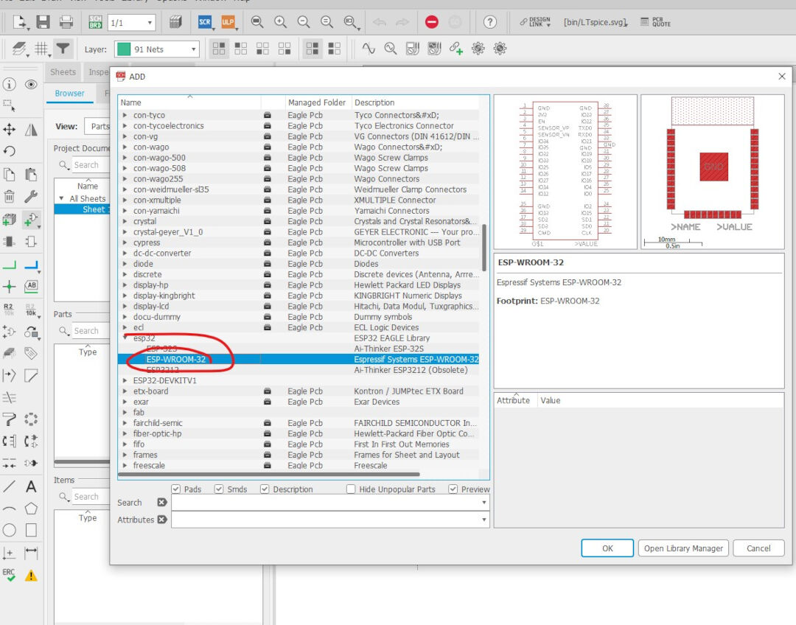
Because I want maximum compatibility with the dev kits for ESP32 I was use to I went looking for and found a ESP32 Wroom pinout that I used to name the pins.
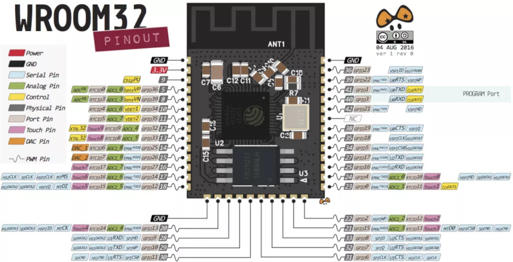Found again on Random Nerds tutorial website :-)
Next step was to go and attach net wires to each pin. I wish I did this in the order I am presenting as it would have saved me redoing many wires I connected wrongly in the first place. Wheel the lesson is logical pin number and physical pin numbers are not always the same so with that in mind connected them this time correctly.
Thats the end result:
The relay I found at snapeda its not the same model than the one I have but the footprint is.
The relay circuit I found online here at web.archive schematics below.
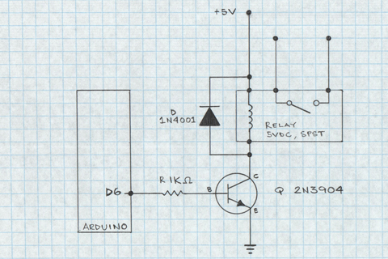
With the schematics in hand I draw the following in eagle:
Since I don't have the TP4056 module for now my circuit will contain only the sensing part.
The voltage divider resistor was calculated using the online calculator here.
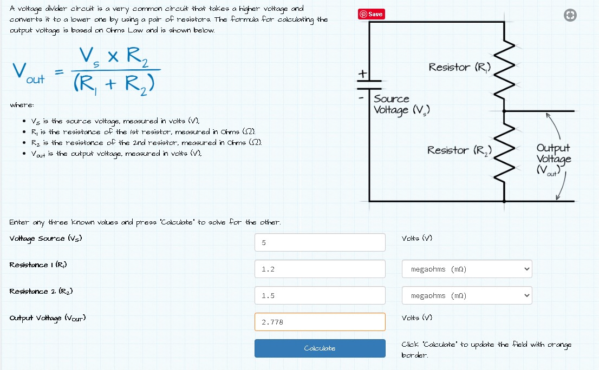
For the future I found the library for the TP4056 here thanks to a tip from Luis Carvo my remote intructor.
The humidity Sensor library can be found here with it in hand I simply had to net some wires to the ESP32 pin 32
As for the current sensor I chose to use the ACS712 the library I found on this Github.the finished Schematics is below:
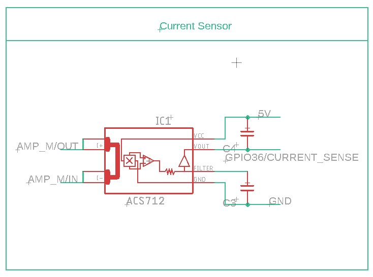
I got the Real time clock library as well at Snapeda but for now I will not use it so the full Schematics I draw is bellow:
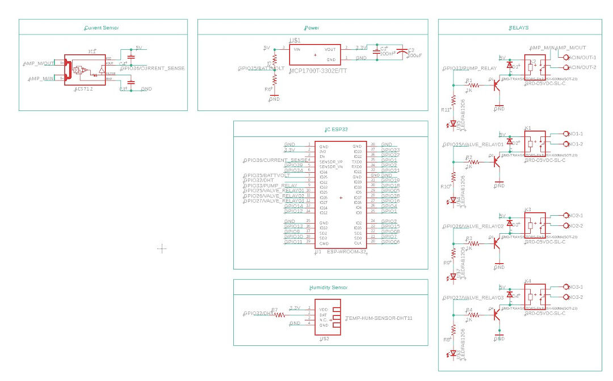
After sometime staring at the Schematics I realize a few errors, I forgot to connect the relays LED's resistor to VCC and also forgot to include a reset and a program button necessary to put the ESP on programming mode as well as forgot to include headers for the serial mode and for expandability and finally I decided to include a crystal for better time keeping.
I then drew the Reset and Program buttons:
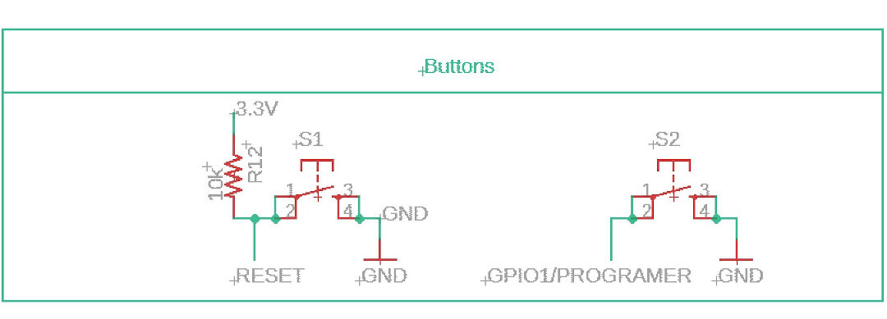
Here I corrected the relays adding the VCC as well as added an octocoupler in between the signal and the relays so I prevent any feedback from the relays.
Here I added TX RX header, crystal for better internall RTC timekepeeng and ESP32DEVKIT compatibility headers.
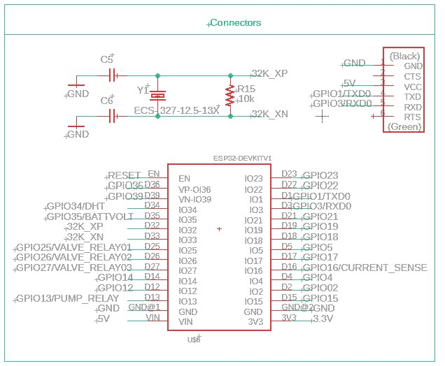
So hopefully finally my final Schematics...
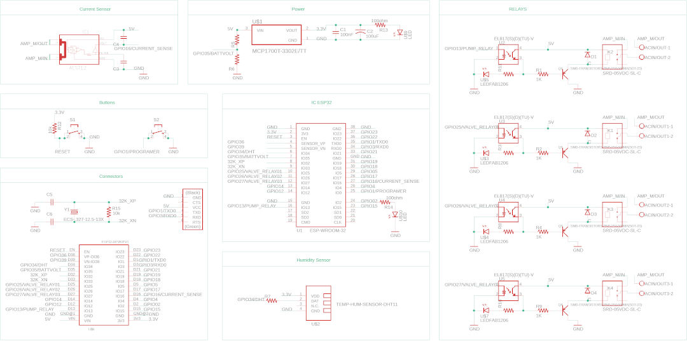
Now I will start the routing work on the board I have to say I am a bit anxious as I never made such a complex PCB!
How encouraging is what I see when I move to the board mode in Eagle!!!
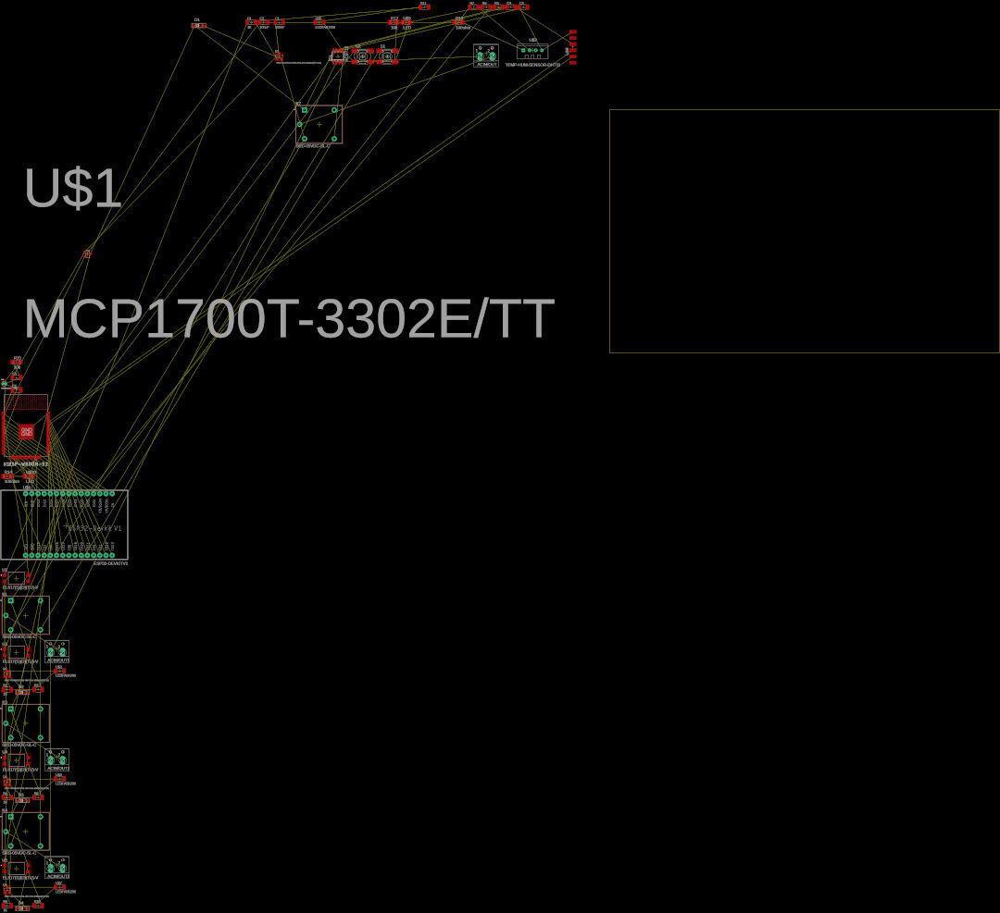
First thing I do is to move the devkit foot print to the center along with the ESP32
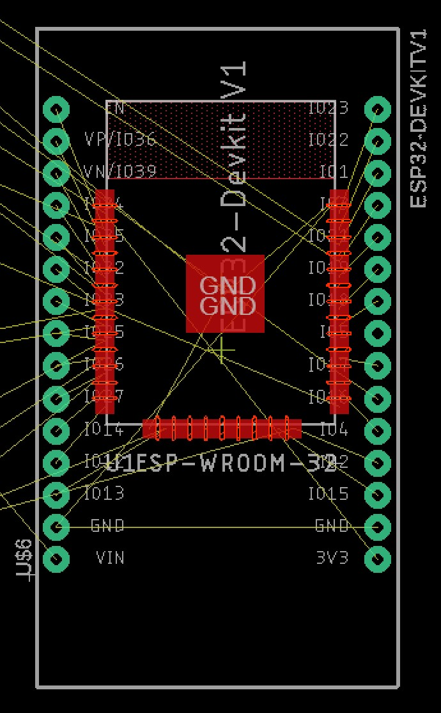
After trying for a while to connect by hand I give a try on the autorouter, I had to stop after a few minutes and the result is laughable. I will try again moving the esp32 up and if not I will not attempt a ESP32devkit compatibility.
So I gave up on the DevKit compatibility and decided to move slowly this time. I created a backup of my work that I opened in another eagle window and deleted all the components I was not working on the schematics and board looked like this. My idea is to copy from the backup the components back as I finish each step. so below its how the step one looks.
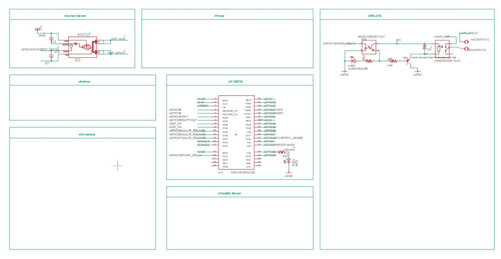
In the Board you can see #1 the relay and #2 the the current sensor circuit and #3 the on board LED.
So now I copied the first valve relay and when I went to the board eagle presented me with the pasted components, I believe this way is much easier.
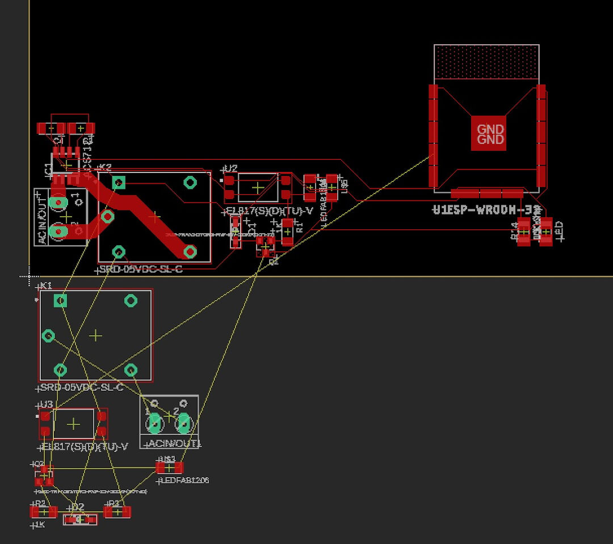
So far the board looks like this, I haven't route any power wires included GND 3.3V and 5V. Will try autoroute now to have an idea and maybe route manually. The entire routing process was best described at input devices week.
After finishing the layout of the board I decided to add the logo. Click on File, import and Bitmap (currently eagle only accepts .bmp).
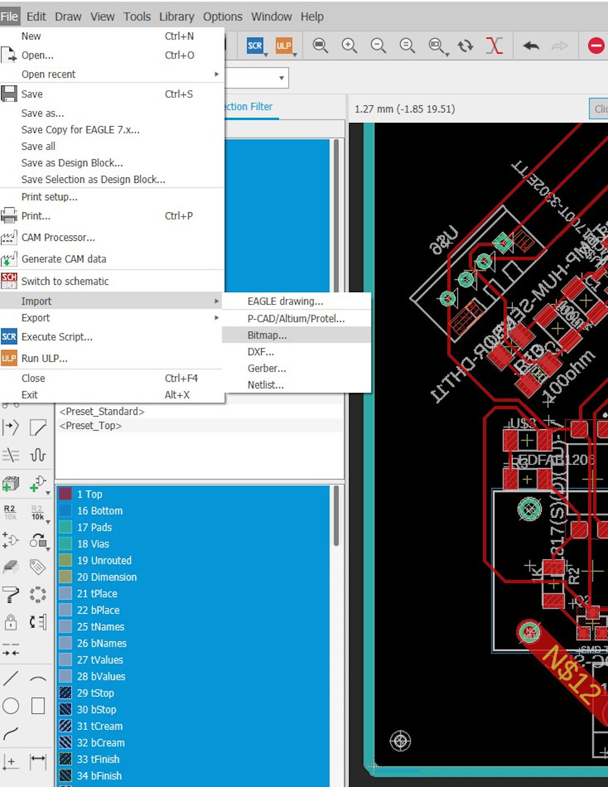
Chose the color to be imported.
Then select the unit, mm in my case and the size and ok.
Because I wanted to mill the logo as opposed to stamp it I had to move it to the top layer.
The finalized board layout with holes and milling contours as described in output devices week.
Milling
Here I show the visualization of the gcode routes with red as the trace closest to the copper to be left.
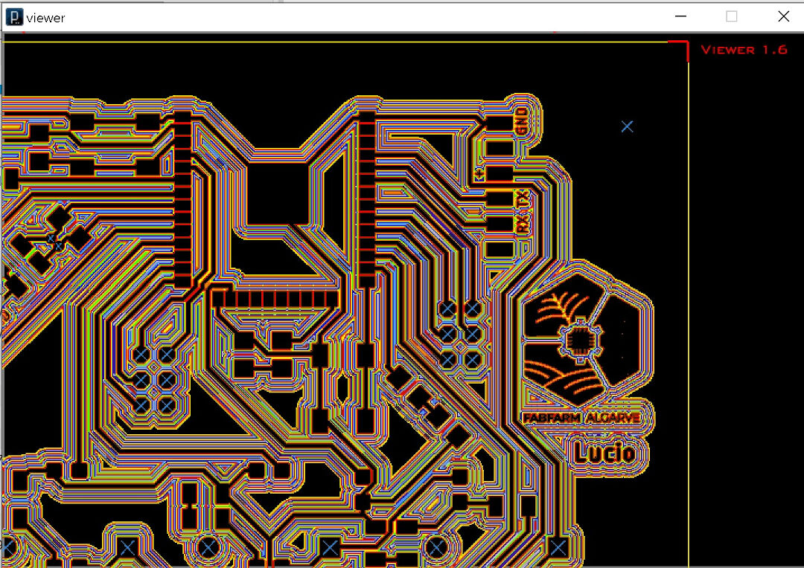
As usual and again best described at week here follows a glimpse of the autolevel software.
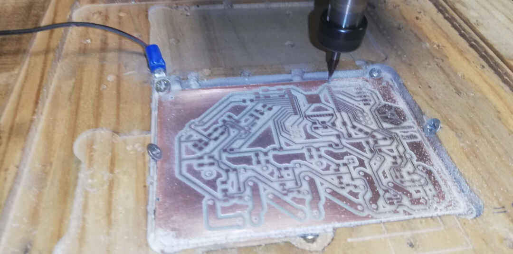
Soldering and testing/Debuging
Inspecting pcb under the light.
In other to verify if the tracks are all good I place the light under the pcb and review everything looking for shorts or missing tracks.
The underside being populated.
I place the big components last as not to make soldering the small smd components hard.
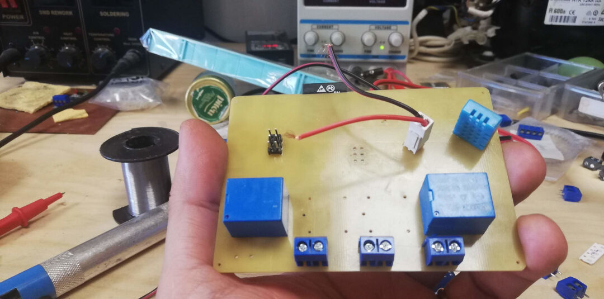
Reading from Serial Monitor/Burning Firmware Schematics
After soldering everything I connect the board to my serial adapter. bellow is the schematics.
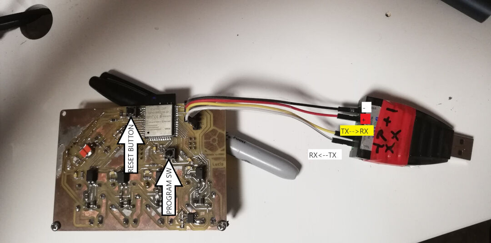
I pasted the first output from the esp32 with factory firmware, It boots!
--- Available filters and text transformations: colorize, debug, default, direct, esp32_exception_decoder, hexlify, log2file, nocontrol, printable, send_on_enter, time
--- More details at http://bit.ly/pio-monitor-filters
--- Miniterm on COM5 115200,8,N,1 ---
--- Quit: Ctrl+C | Menu: Ctrl+T | Help: Ctrl+T followed by Ctrl+H ---
ets Jun 8 2016 00:22:57
rst:0x1 (POWERON_RESET),boot:0x13 (SPI_FAST_FLASH_BOOT)
configsip: 0, SPIWP:0x00
clk_drv:0x00,q_drv:0x00,d_drv:0x00,cs0_drv:0x00,hd_drv:0x00,wp_drv:0x00
mode:DIO, clock div:2
load:0x3fff0008,len:8
load:0x3fff0010,len:3480
load:0x40078000,len:7804
ho 0 tail 12 room 4
load:0x40080000,len:252
entry 0x40080034
[0;32mI (45) boot: ESP-IDF v2.0-3-gbef9896 2nd stage bootloader[0m
[0;32mI (45) boot: compile time 05:59:45[0m
[0;32mI (45) boot: Enabling RNG early entropy source...[0m
[0;32mI (64) boot: SPI Speed : 40MHz[0m
[0;32mI (77) boot: SPI Mode : DIO[0m
[0;32mI (89) boot: SPI Flash Size : 4MB[0m
[0;32mI (101) boot: Partition Table:[0m
[0;32mI (113) boot: ## Label Usage Type ST Offset Length[0m
[0;32mI (136) boot: 0 phy_init RF data 01 01 0000f000 00001000[0m
[0;32mI (159) boot: 1 otadata OTA data 01 00 00010000 00002000[0m
[0;32mI (182) boot: 2 nvs WiFi data 01 02 00012000 0000e000[0m
[0;32mI (205) boot: 3 at_customize unknown 40 00 00020000 000e0000[0m
[0;32mI (228) boot: 4 ota_0 OTA app 00 10 00100000 00180000[0m
[0;32mI (252) boot: 5 ota_1 OTA app 00 11 00280000 00180000[0m
[0;32mI (275) boot: End of partition table[0m
[0;32mI (288) boot: Disabling RNG early entropy source...[0m
[0;32mI (305) boot: Loading app partition at offset 00100000[0m
[0;32mI (1481) boot: segment 0: paddr=0x00100018 vaddr=0x00000000 size=0x0ffe8 ( 65512) [0m
[0;32mI (1481) boot: segment 1: paddr=0x00110008 vaddr=0x3f400010 size=0x1c5f0 (116208) map[0m
[0;32mI (1498) boot: segment 2: paddr=0x0012c600 vaddr=0x3ffb0000 size=0x0215c ( 8540) load[0m
[0;32mI (1528) boot: segment 3: paddr=0x0012e764 vaddr=0x40080000 size=0x00400 ( 1024) load[0m
[0;32mI (1551) boot: segment 4: paddr=0x0012eb6c vaddr=0x40080400 size=0x1b028 (110632) load[0m
[0;32mI (1630) boot: segment 5: paddr=0x00149b9c vaddr=0x400c0000 size=0x00034 ( 52) load[0m
[0;32mI (1631) boot: segment 6: paddr=0x00149bd8 vaddr=0x00000000 size=0x06430 ( 25648) [0m
[0;32mI (1648) boot: segment 7: paddr=0x00150010 vaddr=0x400d0018 size=0x7a56c (501100) map[0m
[0;32mI (1675) heap_alloc_caps: Initializing. RAM available for dynamic allocation:[0m
[0;32mI (1697) heap_alloc_caps: At 3FFBA6B8 len 00025948 (150 KiB): DRAM[0m
[0;32mI (1719) heap_alloc_caps: At 3FFE8000 len 00018000 (96 KiB): D/IRAM[0m
[0;32mI (1740) heap_alloc_caps: At 4009B428 len 00004BD8 (18 KiB): IRAM[0m
[0;32mI (1761) cpu_start: Pro cpu up.[0m
[0;32mI (1773) cpu_start: Single core mode[0m
[0;32mI (1786) cpu_start: Pro cpu start user code[0m
[0;32mI (1846) cpu_start: Starting scheduler on PRO CPU.[0m
[0;32mI (2085) uart: queue free spaces: 10[0m
Bin version:0.10.0
I (2087) wifi: wifi firmware version: c604573
I (2087) wifi: config NVS flash: enabled
I (2088) wifi: config nano formating: disabled
I (2096) wifi: Init dynamic tx buffer num: 32
I (2097) wifi: wifi driver task: 3ffc4eac, prio:23, stack:3584
I (2102) wifi: Init static rx buffer num: 10
I (2106) wifi: Init dynamic rx buffer num: 0
I (2110) wifi: Init rx ampdu len mblock:7
I (2114) wifi: Init lldesc rx ampdu entry mblock:4
I (2118) wifi: wifi power manager task: 0x3ffca254 prio: 21 stack: 2560
I (2125) wifi: wifi timer task: 3ffcb2d4, prio:22, stack:3584
[0;31mE (2130) phy_init: PHY data partition validated[0m
[0;32mI (2152) phy: phy_version: 329, Feb 22 2017, 15:58:07, 0, 0[0m
I (2152) wifi: mode : softAP (3c:71:bf:10:66:e1)
I (2155) wifi: mode : sta (3c:71:bf:10:66:e0) + softAP (3c:71:bf:10:66:e1)
I (2159) wifi: mode : softAP (3c:71:bf:10:66:e1)
Burning the firmware:
In order to burn my firmware I use Microsoft VScode with Platformio.
Before Starting with the burning process first I had to configure the enviroment of Platformio. I describe this here in the project development week.
Next I hold down the GPIO0 switch and press reset button to enter the firmware burning mode. After that I press on the icon to burn the firmware and it burns. Success!
Debugging the board.
I ended up removing all the components in order to review the the signals directly produced by the microprocessor.
The result from the debug was that I found out there was nothing wrong with the code or the microprocessor soldering or the immediate tracks.
What I found out was that the I needed to have 220 ohms resistors added between the signal and Anode pin number 1 of each octocoupler. It turns out the octocoupler has an internal LED and the voltage used to activate it needs to be limited.
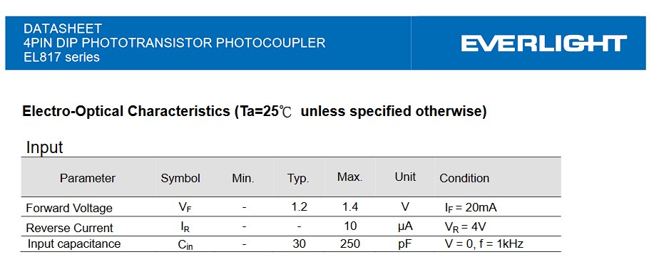
Then R=(3.3v-1.2v)/20ma=105ohms or
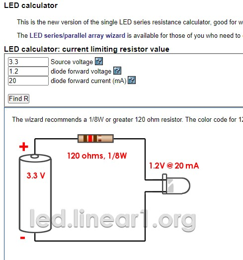
I then cut the tracks and soldered the 220ohms resistors because that was what I had in hand and it worked but the right size is 120ohms as the online resistor calculator shows.
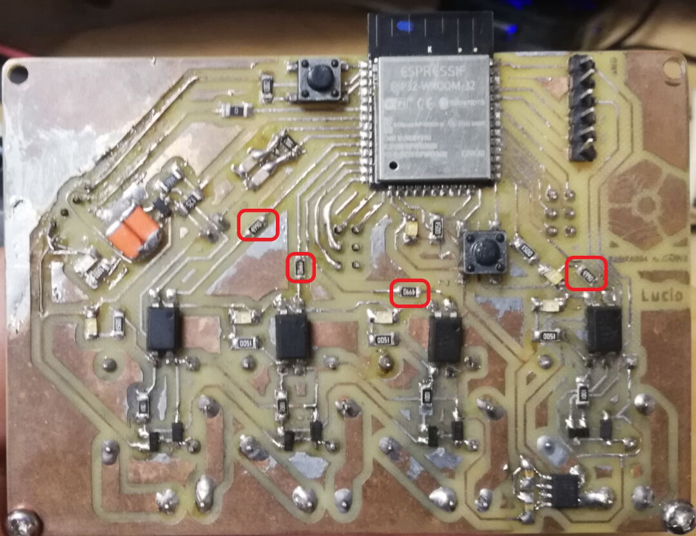
And this is how the schematics for the relay look like
Network Code in the firmware
There are two types of communications happening in my board that I can describe.
The communication between the phone and the esp32 (TCP/IP protocol)
The communication between the c++ and the HTML Arduino Json
Phone and the esp32
The network between the phone and the esp32 is established thanks to a few libraries working together:
"Enables network connection (local and Internet) using the ESP32 built-in WiFi. With this library you can initiate Servers, Clients and send/receive UDP packets through WiFi. The shield can connect either to open or encrypted networks (WEP, WPA). The IP address can be assigned statically or through a DHCP. The library can also manage DNS."
"This is a fully asynchronous TCP library, aimed at enabling trouble-free, multi-connection network environment for Espressif's ESP32 MCUs. This library is the base for ESPAsyncWebServer"
"Async HTTP and WebSocket Server for ESP8266 Arduino"
So basically in my project this libraries are responsible to establish a network connection to a router as well as create an access point.
They also create web server as well as a dhcpserver and with that it issues an ip-address in case one connects to it via the access point created with this code:
//Soft Wifi Access point setup
WiFi.softAP("softap", "password_here");
IPAddress IP = WiFi.softAPIP();
The connection to the router is stabilished with this code:
The webserver is initiated with this code AsyncWebServer server(81);
Connecting C++ and the HTML with Arduino Json
Json is the format I chose for the communication of the Web interface and the microprocessor.
ArduinoJson.h is described on its documentations as:
ArduinoJson is a C++ JSON library for Arduino and IoT (Internet Of Things)
A great source of documentation and a great assistant to create the parsing deserializeJson() program and the serializing serializeJson(doc, Serial) program is a Arduino Json Website
In order to use the library I had first to create an json file. This file will be used by the assistant in order to generate code for the C++.
Having created the json file by hand its time to create the programs in C++. The assistant will then create a c++ code to serialize as well as parse data from and to the json file that is inside the file system.
In the dialog box in the left I pasted the json file contents.
The website generates the codes automatically.
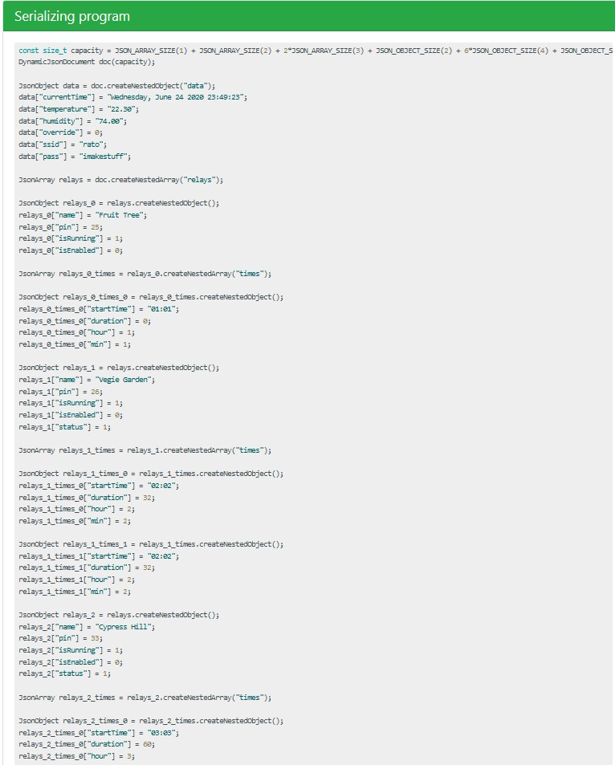
Bellow I show the code generated in the assistant.
With the help of my friend Jeff Knight that without I would not be able to do it alone the code generated was simplified for my program. I then created a few functions and the following picture shows the serial monitor printing the result of a deserialization of the json file read.
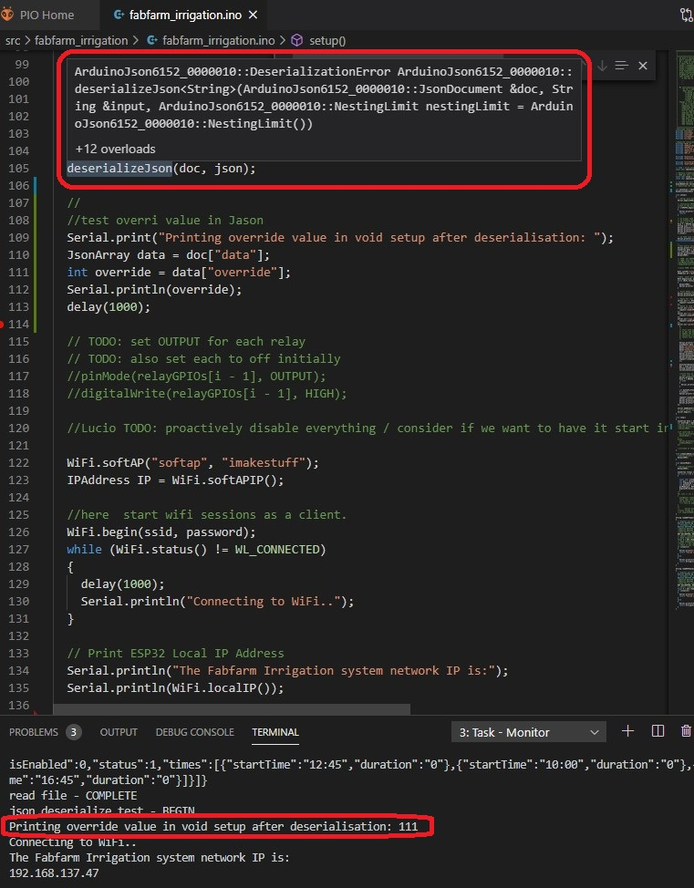
I made this logic diagram so I don't forget how it works:
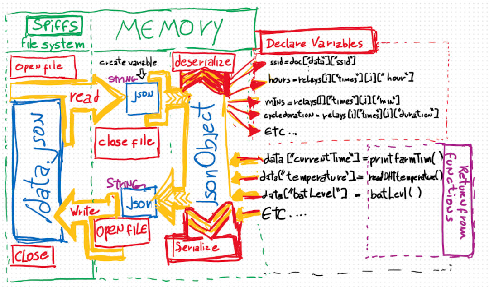
Milling the Enclosure
I designed the enclosure with Solidworks and animated bellow the pcb inside of it.
Here I mill the inside of the enclose, with the screw holes and spacer all integrated.
After flipping the enclosure inside a jig I am able to perfectly align the enclosure so I mill the front side.
Here The PCB and the enclosure
Here I test fit before wiring the pcb.
Wiring the PCB inside the enclosure.
I use waterprof wire passage to the inside of the enclosure
Here I test the fit of the board inside with the wires
Here the wires are fixated. And ready to be closed inside.
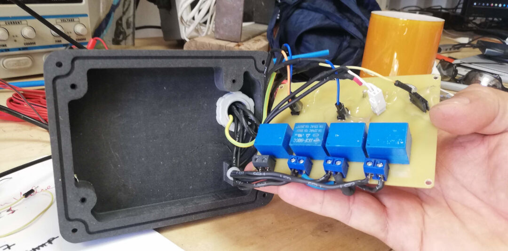
Here the enclosure is screwed and ready to be connected.
Applying epoxy.
I taped the outside and layered epoxy inside the holes so the light from the led would be transfered to the outside even they are not totally aligned with the LED inside.